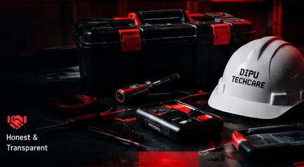

>_ tech support. real people. real solutions.
DIPU TECHCARE
Reliable Technical Services
at Your Doorstep.
Electrical / Smart Home / CCTV / Networking / Computer Service
“We fix what others can’t.” █
SOME
SYSTEMS
JUST NEED
A HUMAN._
SYSTEMS
JUST NEED
A HUMAN._
>_ OUR SERVICES
What We Do
Complete technical solutions for your home and office.
>_ ABOUT / WHY DIPU TECHCARE
Your Technical
Problem → Solution
DIPU TECHCARE provides practical technical support for homes and offices, with a focus on clear communication, careful work and convenient doorstep service.
01Home & OfficeDoorstep service
02Local SupportKalyani & nearby
03Flexible Timing10 AM – 10 PM
04TransparentClear discussion

>_ HOW IT WORKS
Simple 5 Step Process
Getting your problem solved is easy.
01Contact UsCall / WhatsApp / Message
→
02DiscussYour Problem
→
03VisitYour Location
→
04Service& Setup
→
05Complete& Support
>_ SERVICE AREA
Kalyani, Nadia
& Nearby Areas
Home & office technical service around:
- Kalyani
- Kalyani Simanta
- Nadia and nearby areas
●
KALYANISERVICE AREA>_ GET IN TOUCH
Send Us a Message
Tell us about your problem. We'll get back to you soon.
☎ 8276846320
Call / WhatsApp
Call / WhatsApp
✉ dipusingh.cybe@gmail.com
Email Us
Email Us
◷ 10:00 AM – 10:00 PM
Open Daily
Open Daily
>_ FAQ
Quick Answers
Do you provide home service?
Yes. DIPU TECHCARE provides home and office technical service in Kalyani and nearby areas.
How do I request a service?
Call or WhatsApp 8276846320. You can also use the message form above.
Which services do you handle?
Electrical work, smart-home/sensor setup, CCTV, networking and computer service.